Eight states
Northeast Indian Cuisine
Eight cuisines under one label, drawing on the fermentation and bamboo traditions of Tibet and Southeast Asia across the border.
Eight cuisines under one label, drawing on the fermentation and bamboo traditions of Tibet and Southeast Asia across the border.
"Northeast Indian" is a geographic label doing duty as a culinary one. It covers Assam, Arunachal Pradesh, Manipur, Meghalaya, Mizoram, Nagaland, Tripura, and Sikkim. That's eight states, dozens of distinct tribal and ethnic groups, and about as many genuinely different food traditions. They don't share a spice blend the way Punjabi or Hyderabadi cooking does. What they share is an approach. Flavor comes from fermentation and smoking, and the staples are rice and local greens. Stacked masalas, wheat and dairy all stay at the edges.
Geography is a large part of why. The region connects to the rest of India only through the narrow Siliguri Corridor, sometimes called the "Chicken's Neck," while sharing long borders with Tibet, Myanmar, Bhutan, and Bangladesh. Historically, trade and cultural exchange across those borders shaped the region's kitchens at least as much as anything arriving from Delhi.
Where a Punjabi or Hyderabadi kitchen reaches for a garam masala blend, much of the Northeast reaches for something fermented instead. Bamboo shoot, fresh, dried, or fermented into a sour paste known as soibum in Manipur or khorisa in Assam, shows up across the region as a souring, funky base note. Naga cooking in particular relies on akhuni (also spelled axone), fermented soybean with a pungency often compared to Japanese natto, worked into pork and chicken dishes as the flavor the whole plate is built around.
The region's meat cooking, especially pork, leans heavily on open-fire smoking. Cream, ghee, and yogurt see comparatively little use as a curry base, so the dairy-rich gravies common further west and north have no real counterpart here. Assamese cooking adds its own signatures on top of this. Masor tenga is a light fish curry, and its sourness comes from tomato or lemon. Khar is built on an alkaline water filtered through banana-peel ash, an alkaline technique found almost nowhere else in Indian cooking.


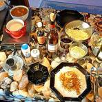
Doh Khleh Doh Neiiong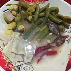
Eromba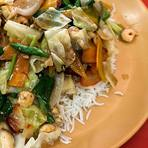
Galho Gundruk ko Jhol Hanhor Mangkho Jadoh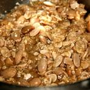
Kinema Masor Jhol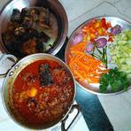
Masor Tenga Momos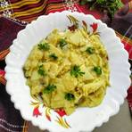
Muya Awandru Naga Smoked Pork with Bamboo Shoot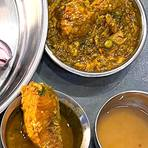
Nga Thongba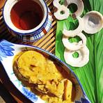
Omita Khar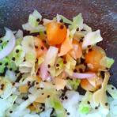
Ooti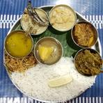
Pika Pila Poita Bhat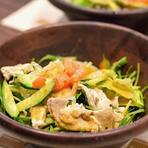
Sanpiau Sel Roti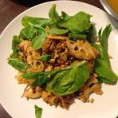
Singju ThukpaNot cooking tonight?
Tell us what is in your kitchen, and Khaana will help you cook an authentic Indian meal.